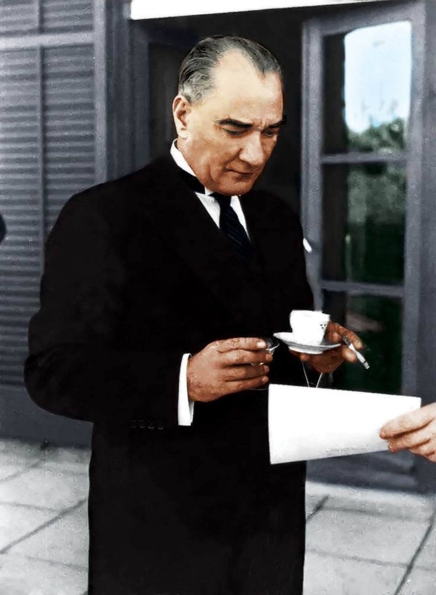

Ataturk greets the people at the opening of the new, european and modern style parliament, after saving Turkey from the Ottoman Empire, which it is a reactionary Islamic state.
(Unfortunately and so sadly, today Turkey is still ruled by reactionarist Islamists and is constantly moving backwards away from civilization)
Here's a time line of Ataturk's life:

- 1881 - Born in Salonika city in Greece was once under the rule of Ottoman Empire:
-
1905 - Mustafa Kemal Ataturk graduated from military school and start his military life. When he was 12 years old, Mustafa Kemal Ataturk was sent to military school and spent his education there and after school, he was sent to the military academy where he became an official soldier. During his education at the military academy, Mustafa Kemal Ataturk was one of the students who proved their intelligence and his teachers always believed in his clear mind and shrewdness.
-
1911 - He joined the war against the Italians in Libya.
-
1912-13 - He joined the war against Balkans and played a very important role in securing the Ottoman Turkish victory during the Battle of Gallipoli also known as the dardanelles in World War One.
-
1923 - He defeat the Ottoman forces in Turkey and he officially announced the establishment of the Turkish Republic.
As the first president of the newly established Turkish Republic, Mustafa Kemal Ataturk initiated a strict program of political, economic, and culture reforms to build a modern, progressive nation-state country and yes, he was able to do that. The father of Turks built thousands of schools and made primary education free and compulsory. He replaced the Ottoman Arabic alphabet with latin Turkish Alphabet, and women were given their rights once again.
During his period, the process of Turkicisation was taken very seriously, non- Turkish minorities were pressured to speak Turkish, and people with non-Turkish names and surnames were pressured to change their names to Turkish renditions.
Slowly and a year after year, the Turkish Republic started to create a very important place for itself among the international society under the lead of Mustafa Kemal Ataturk whether in terms of economic, politics, military, and culture. The country stood up again fast and all of Turkish people worked together to build a strong connected nation.
-
1938 - He died on 10 November 1938 in the Dolmabahce palace where he spent his last period of life.
If you have time, you should read more about this incredible human
being on his
Wikipedia entry.